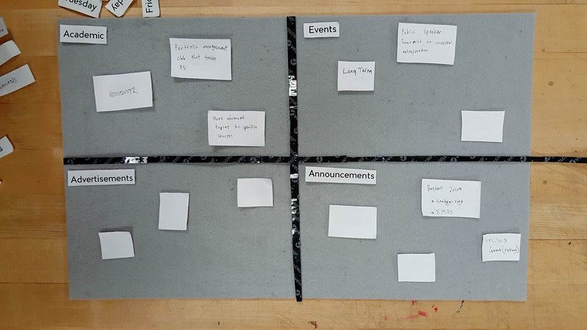

For this project, I collaborated with Ji Tae Kim and Jasper Tom to research the unorganized state of school bulletin boards and explore solutions to such a problem.
Our methods of research involved posting our own surveys to the bulletin boards, creating a velcro model for participants to interact with and show us their ideal layout, and user-testing our own layout on a smaller-scale bulletin board.


From our research, we found that people don't commonly interact with bulletin boards, and the ones that are owned by the school are not maintained very well at all. As a result, we decided to shift our approach to changing the culture of how students perceive bulletin boards. Since students are more likely to follow the trend they see on the bulletin boards (disorganized clutter versus a clean grid), we cleaned up one of the school's most notable bulletin boards and placed a bin as part of the board to encourage students to throw away outdated or overlapping posters.